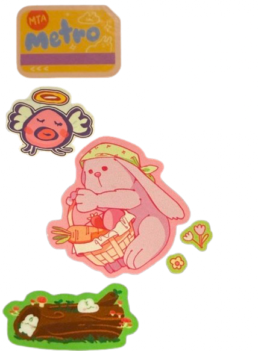

<html>
   <body style = background-color:rgb(142,210,206)>
   </body>
    <h1 style = text-align:center; >
        this is my journal!
    </h1>

    <h2 style = text-align:center;>
        currently attempting to actually re-start journaling
    </h2>


    <body>
       
        
        
        
        
    </body>
       

  